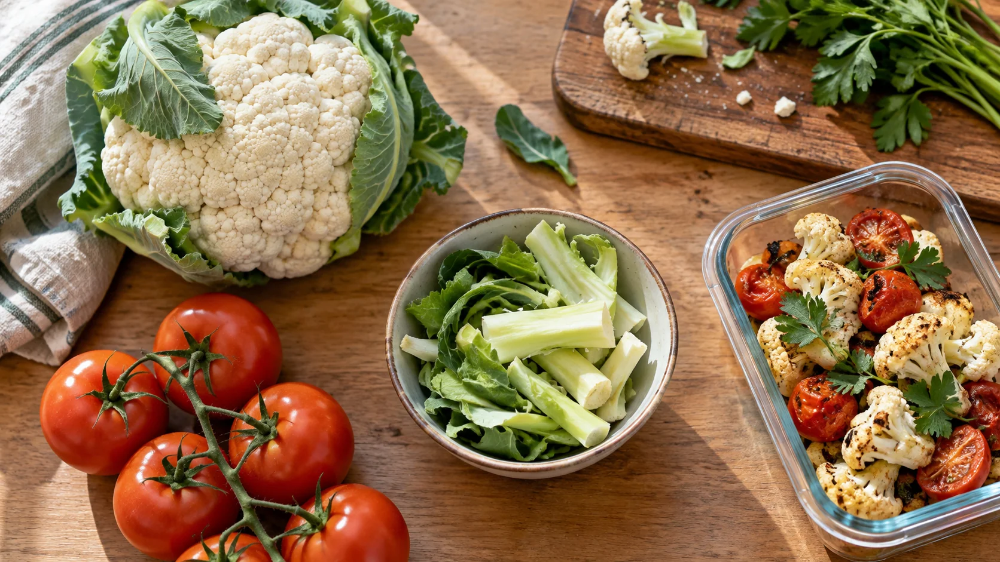
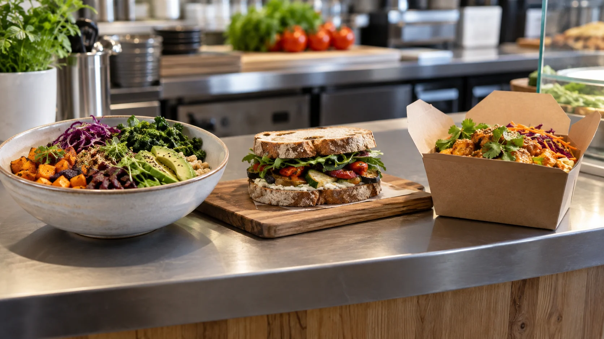
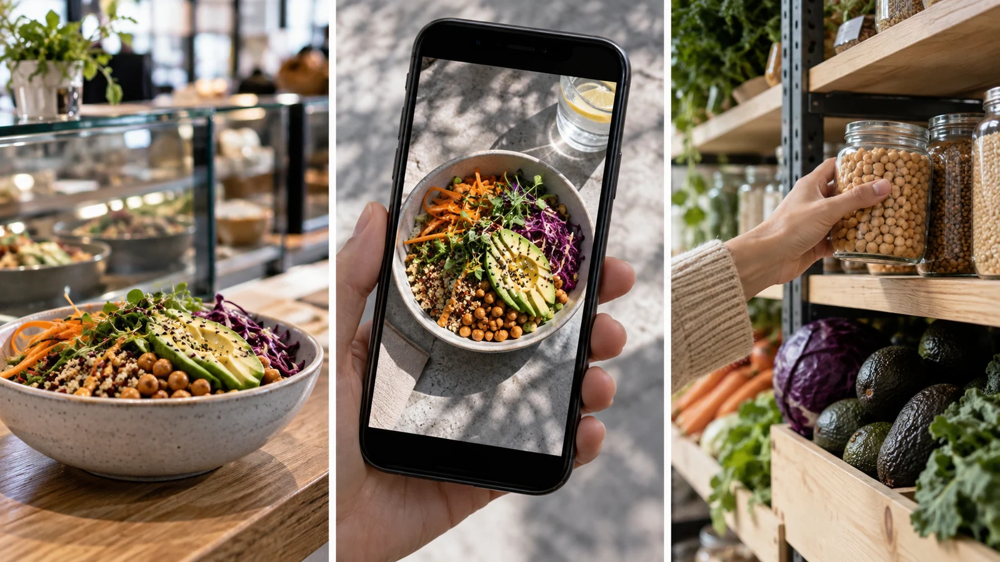
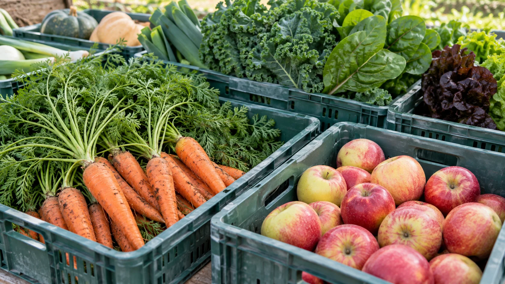
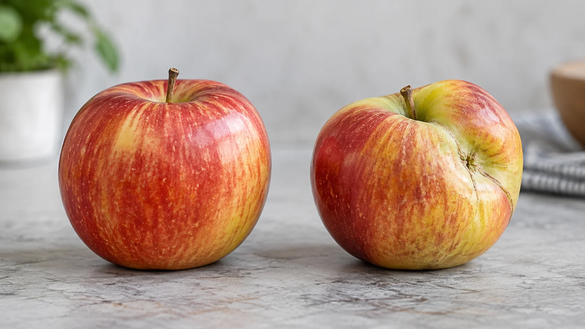
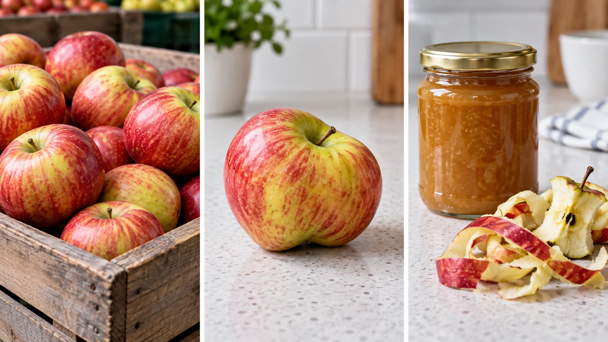
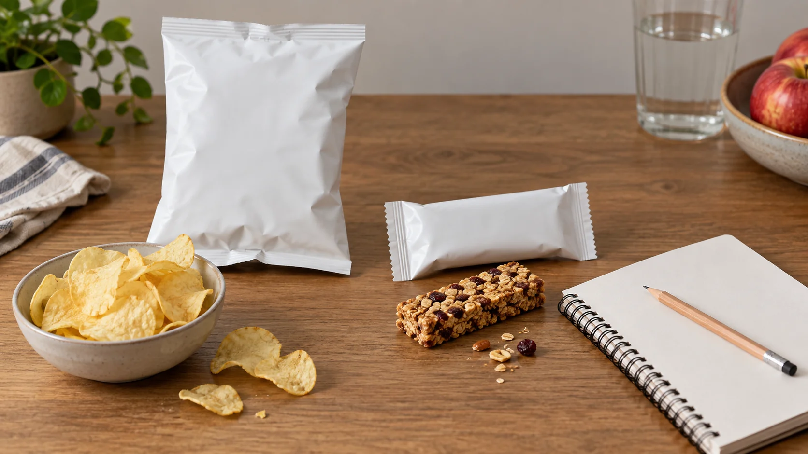
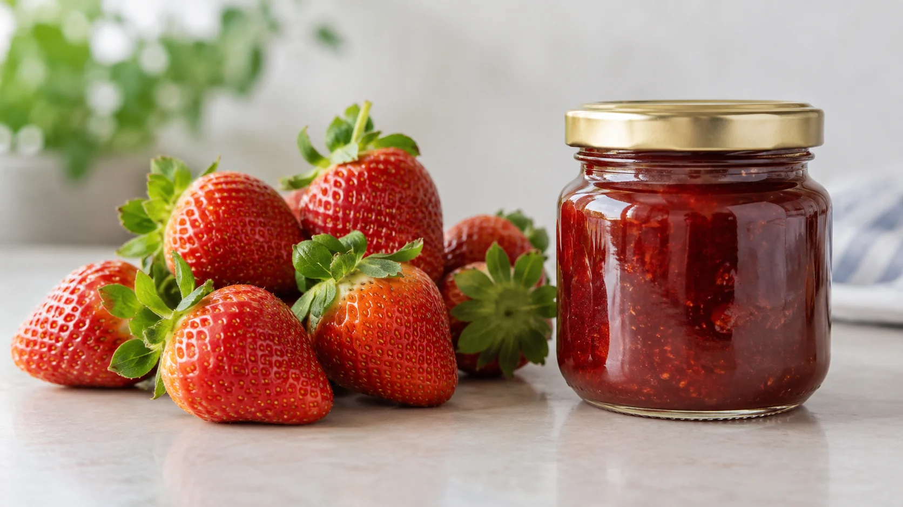
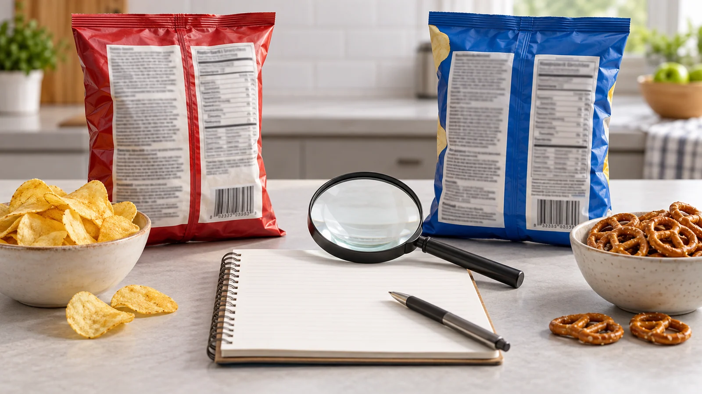

Module 2 of 4 · Term 2
Food Trends
Food trends change what people choose, how food is sold and how it is presented. Study their drivers, then test claims about health, local produce, waste and value adding with evidence.
Loading progress…

Notice: Which parts could still have a purpose, and what would you need to check?
Open larger ↗{kind=link}
Module 2 PowerPoint
Use the matching slides to preview and review the three learning sections.
Section 2.1
Why food trends emerge
A trend can become popular quickly; its popularity is not proof that it suits every person.
A food trend is a pattern of interest or behaviour in food selection, service or presentation that gains attention over time. The 2019 Food Technology focus area asks students to consider why trends appeal to consumers and how they shape food choices. Some trends are long-running; others may fade after a burst of publicity. A trend can spread because of changing lifestyles, social media, a new product, concern about health, interest in the environment, cultural exchange or a need for convenience. Several influences often work together, so there is rarely one simple cause.
Imagine a café advertising a new vegetable-based meal. It may appeal to people wanting a different flavour, an option they perceive as healthier, a particular dietary pattern, or a meal that looks good in a photograph. These are possible reasons for interest, not evidence that the meal is automatically more nutritious or sustainable. Trend words such as ‘natural’, ‘local’ or ‘high protein’ can influence first impressions. Ask what each word actually means in the specific product and what information would test the implied benefit. A product can suit one person’s needs and not another’s.
Consumers also influence businesses. When enough customers seek an option, businesses may change menus, packaging or marketing. Businesses can then promote those products and further shape demand. Price, access, culture, allergies and personal needs affect who can participate. A trend presented as universal may be out of reach for some people or unsuitable for their needs. The Australian dietary guidance is a useful broader reference: a healthy eating pattern draws on variety across the five food groups rather than one fashionable ingredient or product.
The 2026 class explores mindful eating, local produce, food miles, waste, value adding and dietary trends. Use those topics as questions, not as slogans. For example, mindful eating can prompt attention to the experience of eating, while an evidence-based nutrition judgement still needs information about the food and the person’s needs. A useful investigation separates a trend’s appeal from its claimed outcomes. Describe who may benefit, what might limit participation and what evidence would change your judgement.

Notice: Which reasons could you support with evidence?
Open larger ↗{kind=link}
A menu calls a meal ‘local and healthy’. Identify two separate claims. Check origin evidence for ‘local’ and relevant nutrition information for ‘healthy’ rather than treating the phrase as one proven fact.
Explore the evidence

Notice: Which claim would need independent evidence?
Open larger ↗{kind=link}
Video candidate · final check pending
Australian protein foods of the future explained · CSIRO

Watch from 00:07 to 00:59. Pause and answer the question below.
If the player is blank or unavailable, use the YouTube link or follow the non-video path below.
Watch for: Which two drivers are named, and what would you check before saying a predicted trend has happened?
If you cannot watch: Read the section’s trend-driver explanation and compare its three fictional headlines; name the driver and the evidence needed for each claim.
See all course videos →Non-video pathway: compare three fictional trend headlines and mark each as a description, a claim or evidence.
- Headline A: ‘Plant-based choices appear on more café menus.’ Is this an observation or evidence of why people choose them?
- Headline B: ‘This snack improves concentration.’ What evidence would test that claim?
- Headline C: ‘A creator says a food is the next big thing.’ Whose interest and missing evidence should you check?
Learning activity 2.1 · 10 questions + written response
Formative learning evidence. Choose an option to see feedback and use the help link if needed.
Written challenge
Choose a current or plausible food trend and explain why it might spread. Evaluate two claims made about it and decide what evidence would be needed before recommending it to a particular group of consumers.
Use these prompts to build one response:- Describe the trend and at least two influences on its appeal.
- Separate what is observed from health or environmental claims.
- Consider price, access and different consumer needs.
- State the evidence that would support or weaken your recommendation.
Use at least two developed sentences so this response counts towards your section progress.
Success looks like:- Explains how consumer demand and promotion can interact.
- Uses evidence and limits instead of treating popularity as proof.
Section 2.2
Local produce, waste and value adding
Local origin, less waste and greater product value are related ideas, but each needs its own evidence.
Local produce generally means food grown or made relatively near the place where it is sold or eaten. What counts as ‘local’ depends on the boundary being used: a town, region or state can produce different answers. The class explores food miles, the distance food travels from production to consumption. Distance is useful to ask about, especially when comparing transport routes, but it is not a complete measure of environmental impact. Production, storage, packaging, transport type and waste can all matter. A shorter route does not automatically prove a smaller overall impact.
Food waste is food intended for people that is thrown away. It can occur at farms, during processing and distribution, in retail and hospitality, and at home. Waste represents lost food and the resources used to produce and move it. Australia’s national strategy aims to reduce food waste across the supply chain, so responsibility is shared rather than assigned only to households. A useful first question is where and why a specific loss occurs. Damage during transport, an unsuitable order size and unused food at home call for different responses.
Value adding means changing a product or service so it offers something consumers find useful and may be willing to pay for. A producer might turn suitable surplus fruit into another saleable product, or a business might offer a different presentation or convenient format. That idea can reduce some waste when it uses food that otherwise would be discarded, but it is not automatically a waste solution. Processing may need extra materials, energy, labour, packaging and distribution. The result still needs to be wanted by consumers and priced within reach of its intended market.
Suppose a grower has fruit that is sound but does not meet a retailer’s appearance preference. Selling it differently or using it in another product are possible pathways to investigate. Compare how much edible food each pathway saves, what it costs, the resources it uses and who can afford the final product. Avoid claiming that the ‘local’ or ‘upcycled’ option is always best. A good decision traces the entire pathway and names the evidence still needed. In practical work, the teacher’s approved instructions and food-safety arrangements control what students actually make.

Notice: Which parts might be used, and what must be checked first?
Open larger ↗{kind=link}

Notice: What else would you check before deciding whether to use either apple?
Open larger ↗{kind=link}
A ‘local’ tomato and a tomato from another region cannot be compared fairly using distance alone. Ask about how each was produced, stored, moved and wasted before making an environmental claim.

Notice: Which facts would you need before comparing the three stages?
Open larger ↗{kind=link}
Video candidate · final check pending
How food rescue initiative OzHarvest transforms waste into food | Discovery | Gardening Australia · ABC Gardening Australia

Watch from 02:13 to 04:35. Pause and answer the question below.
If the player is blank or unavailable, use the YouTube link or follow the non-video path below.
Watch for: Which food is rescued or transformed, and what data would you need to judge total waste fairly?
If you cannot watch: Compare the two fictional fruit journeys in this section and use the visual to mark where loss or waste might occur before judging a claim.
See all course videos →Non-video pathway: inspect a two-product journey and list the missing information before deciding which route wastes less.
- Fictional journey A: local fruit is bought loose, carried home and eaten within two days. Which waste points are visible and which remain unknown?
- Fictional journey B: fruit travels further in protective packaging and lasts longer at home. Which extra facts about transport, packaging and spoilage would a fair comparison need?
Open Food Trends classwork ↗ (school access may be required)
Learning activity 2.2 · 10 questions + written response
Formative learning evidence. Choose an option to see feedback and use the help link if needed.
Written challenge
Compare two ways a business could use sound surplus produce. Evaluate likely effects on food waste, consumer value, affordability and resource use, then recommend what evidence the business should gather before choosing.
Use these prompts to build one response:- Identify where the surplus arises and why it might be wasted.
- Explain how each option adds value or changes access.
- Compare waste avoided with added energy, packaging, labour or transport.
- Choose useful measures and state any uncertainty.
Use at least two developed sentences so this response counts towards your section progress.
Success looks like:- Treats food miles and local origin as partial evidence rather than complete environmental proof.
- Makes a justified recommendation using more than one criterion.
Section 2.3
Evaluate a food trend
A good judgement names the consumer, tests the claim and explains the trade-offs.
To evaluate a food trend, start with a clear decision: is the idea suitable for a particular consumer or purpose? Record exactly what is being claimed and by whom. Separate a product’s features, such as ingredients or price, from promotional language such as ‘better for you’ or ‘green’. A comparison needs a fair reference point. ‘Lower sugar’ only becomes meaningful when you know lower than what, measured in which amount, and whether other relevant qualities differ. An attractive photograph or a high number of online views tells you about presentation and reach, not necessarily quality.
For packaged foods, the nutrition information panel can help compare similar products. Food Standards Australia New Zealand explains that the per 100 g or 100 mL column is useful for comparison because serving sizes can differ between brands. Read the ingredient list and relevant allergen information when suitability is at issue. A claim such as ‘no added sugar’ does not mean a product has no sugars; the label and context still matter. The Australian dietary guidance also asks students to think about their overall pattern of eating, rather than treating one product as a shortcut to health.
Environmental claims need similar care. ‘Local’ gives an origin clue but does not by itself measure total impact. ‘Less waste’ should be supported by information about what food was saved and any new resources used. Australia’s consumer regulator advises that environmental claims be accurate and backed by evidence. Ask whether a claim is specific, whether a reliable source supports it, and whether important limitations are missing. Avoid a false choice between two extremes: a trend can have genuine benefits while still carrying costs or uncertainty.
A decision also depends on the consumer and the setting. Price, availability, cultural fit, accessibility and intended use all affect suitability. Build a simple evidence table with claim, source, comparison and limitation. Then make a conditional judgement: ‘For this group, this option may work because…, provided that…’. The posted Food Trends task and its live instructions remain in Google Classroom; this section helps you reason about choices, but it does not replace the teacher’s task. Revisit the evidence if new information appears.

Notice: What claims, ingredients or other evidence would you need?
Open larger ↗{kind=link}

Notice: What has changed, and what evidence would you need about value?
Open larger ↗{kind=link}
Two similar snacks list different serving sizes. Compare the same nutrient per 100 g first, then consider the actual amount eaten, price, ingredients and the needs of the intended consumer.

Notice: What would you compare per 100 g, and what would still be unknown?
Open larger ↗{kind=link}
Video candidate · final check pending
What is Greenwashing? - Behind the News · ABC Behind the News

Watch from 01:24 to 02:18. Pause and answer the question below.
If the player is blank or unavailable, use the YouTube link or follow the non-video path below.
Watch for: What makes a claim sound persuasive, and which evidence would actually let you test it?
If you cannot watch: Compare fictional labels A and B in this section; distinguish an unsupported front-pack phrase from a checkable ingredient list and nutrition panel.
See all course videos →Non-video pathway: use a fictional label comparison to identify a claim, a fair measure and one unanswered question.
- Fictional label A says ‘natural energy’ but gives no evidence for the phrase. Label B lists ingredients and a nutrition panel. Which information can be compared, and what remains unanswered about the claim?
Open the posted Food Trends assessment ↗ (school access may be required)
Learning activity 2.3 · 10 questions + written response
Formative learning evidence. Choose an option to see feedback and use the help link if needed.
Written challenge
A business promotes a new ‘local, low-waste, healthier’ snack. Evaluate those three claims for a defined group of consumers and make a conditional recommendation using the evidence you would need.
Use these prompts to build one response:- Identify the intended consumers and the decision they face.
- Test the origin, waste and nutrition claims separately using fair comparisons.
- Consider price, availability, suitability and possible trade-offs.
- Write a conditional conclusion and name at least one unresolved question.
Use at least two developed sentences so this response counts towards your section progress.
Success looks like:- Uses relevant sources and common measures to assess each claim.
- Explains limits and avoids turning a broad marketing phrase into a fact.
Review this module
These three checks sit after their learning sections. Revisit any one directly; your work stays saved on this device.
- Why food trends emergeNot started
- Local produce, waste and value addingNot started
- Evaluate a food trendNot started